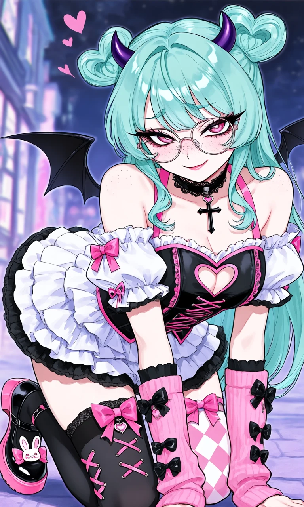
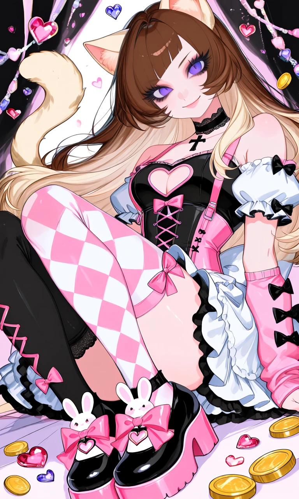

Harlequin Heart

Outfit Prompt
Choker: Black lace choker with a small heart pendant and a dangling black cross. Top: A black and pink corset-style bustier with: Heart-shaped cutout on the chest. Pink lacing down the front. Pink bows and trim. Puffy white detached sleeves with pink and black cuffs and bows. Off-shoulder / strapless look with pink straps.
Skirt: Multi-layered white frilly skirt with black trim and ruffles, giving strong sweet lolita or maid vibes. The skirt is short, showing off the thighs. Stockings (mismatched for that classic pastel goth asymmetry): Left leg: Solid black thigh-high with pink lace-up corset detailing on the upper thigh and a pink bow. Right leg: Pink-and-white diamond (harlequin) pattern thigh-high with a pink bow at the top.
Shoes: Chunky black-and-pink platform lolita shoes. Pink soles and accents. Heart cutouts. Large pink bows with dangling heart charms. Bunny ear decorations on the toes.
Arms: Pink arm warmer on the left arm with bows. Heavy use of hearts, bows, crosses, and lace in the outfit.
Outfit Examples



